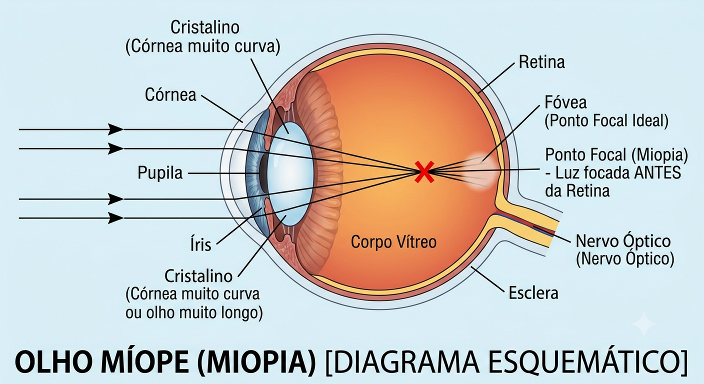
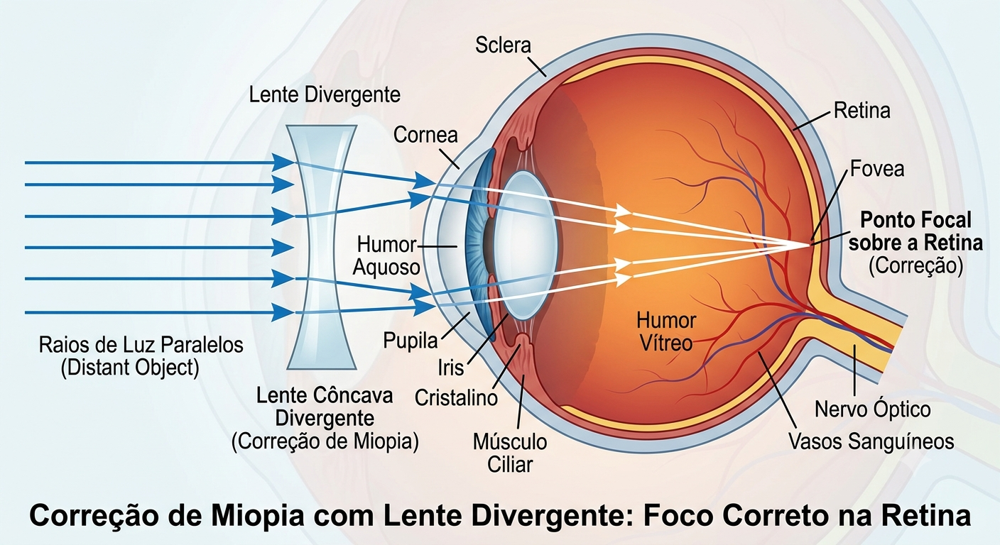
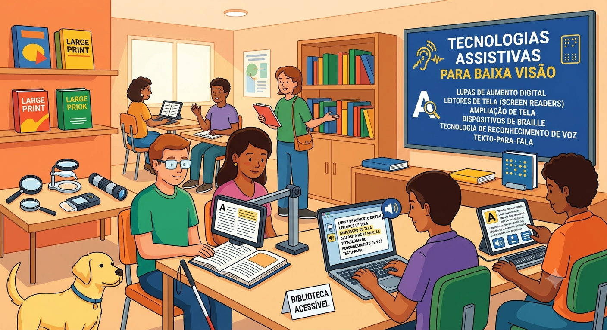

O que é a Miopia e a Deficiência Visual?
A miopia é um erro de refração no qual os objetos próximos são vistos com clareza, mas os objetos distantes parecem embaçados e desfocados. Isso acontece quando o globo ocular é mais longo do que o normal ou a córnea possui uma curvatura muito acentuada.
Quando a miopia atinge graus muito elevados (geralmente acima de -6,00 dioptrias), ela é classificada como miopia alta ou degenerativa. Nesses casos, pode levar a complicações sérias na retina e causar baixa visão ou deficiência visual severa, exigindo recursos de acessibilidade e acompanhamento oftalmológico contínuo.
⚡ Informação Bônus: A Física por trás da Miopia
Na óptica geométrica, o olho humano funciona como um sistema óptico que combina lentes convergentes (córnea e cristalino) e um anteparo projetor (retina):
Formação da Imagem
Em um olho normal (emetrope), os raios de luz paralelos convergem exatamente sobre a retina.
O Problema na Miopia
No olho miope, o ponto focal de convergência é formado antes da retina, resultando em uma imagem projetada desfocada.
A Solução Física (Lentes Divergentes)
Para corrigir o foco, utiliza-se uma lente divergente (côncava). Ela espalha levemente os raios de luz antes de entrarem no olho, fazendo com que a imagem final se forme exatamente sobre a retina.
📹 Vídeo Educativo
Assista ao vídeo abaixo para ver como a luz se comporta dentro do olho miope e como as lentes corrigem o foco:
Acessibilidade: O vídeo demonstra a passagem de feixes de luz através do olho humano e a correção por meio de lentes côncavas.
🖼️ Galeria sobre Miopia e Acessibilidade
Esquemas visuais explicativos sobre a anatomia do olho miope e a óptica corretiva:



🔗 Links Externos e Materiais sobre Deficiência Visual
Consulte fontes oficiais e instituições dedicadas à saúde ocular e acessibilidade:
- 🌐 Conselho Brasileiro de Oftalmologia (CBO) - Informações oficiais sobre prevenção de erros de refração e saúde ocular.
- 📖 Fundação Dorina Nowill para Cegos - Recursos, apoio e inclusão para pessoas com deficiência visual e baixa visão.